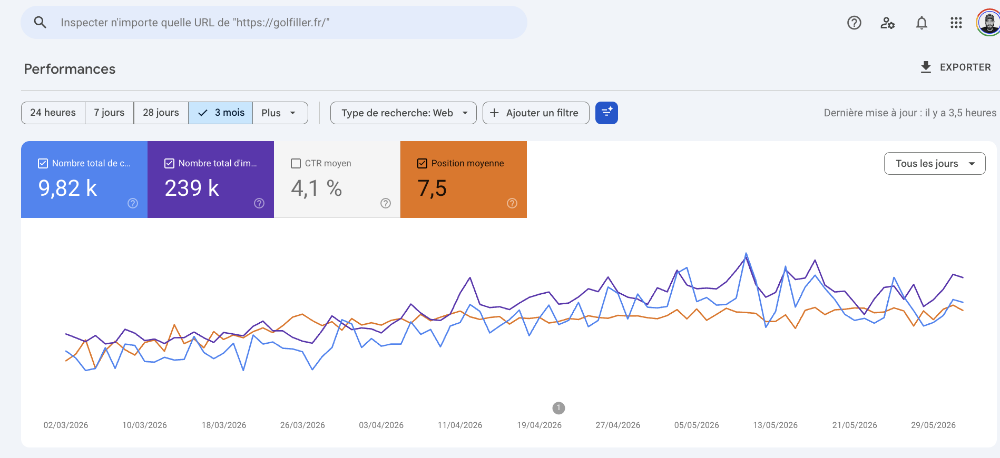
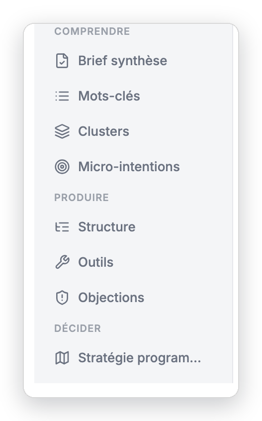

![[ Capture GSC « Comparer » à insérer ]](shots/gsc_compare.png)
Note de stratégie · Organikk
Golfiller (golfiller.fr), e-commerce de balles de golf d'occasion et reconditionnées. Objectif : bâtir une autorité sur une niche défendable, les balles de golf d'occasion, plutôt que de viser les mêmes requêtes génériques que les gros acteurs. Résultat : 1re position sur « balle de golf », devant Décathlon et Amazon, sans un seul backlink.
État : projet de pages programmatiques en cours sur les requêtes slope et handicap, base de ~40 parcours français (slope + SSS), calculateur de handicap interactif (formule FFGolf), page construite en HTML propre (calculateur + tableau filtrable + sections par parcours). À venir : extension à ~100 parcours, et une page par parcours si la page pilier tient ses positions.
Le point de départ : Golfiller occupe déjà le haut des résultats Google sur ses requêtes les plus disputées, sans un seul backlink.
| Requête | Position |
|---|---|
| balle de golf | 1re |
| achat balle de golf | 1re |
| balle de golf occasion | 2e |
Les pages qui performent le plus font toutes la même chose : elles font faire quelque chose à l'internaute. Calculer un index, comparer deux balles, consulter un parcours. Ce sont des outils, pas des articles. Une IA résume un texte, mais elle ne fait pas tourner un calculateur à la place de l'utilisateur. Le réflexe à garder : lire la Search Console, repérer ce qui marche, le répliquer.
Les chiffres confirment la trajectoire : sur trois mois, le trafic et les positions montent franchement.

Les pages qui demandent une action résistent. Les pages qui ne font qu'informer se font absorber par les réponses IA de Google, qui donnent la réponse sans renvoyer de clic. Un calculateur ou un tableau interactif n'a pas ce problème : l'utilisateur doit venir sur la page pour s'en servir.
Les pages qui marchent le mieux sont des outils, pas des articles. Une IA recopie et résume un texte sans difficulté, mais elle ne remplit pas un calculateur ni ne trie un tableau à la place de l'internaute. C'est aussi ce que Google met en avant : une page qui règle le besoin sur place, sans renvoyer l'internaute chercher ailleurs.
Le bon dosage n'est pas de répéter ce que tout le monde dit. C'est de coller au sujet tout en apportant quelque chose que les autres pages n'ont pas. Ni hors-sujet, ni redondant.
Une IA cite la source qui apporte l'information qu'elle ne trouve pas ailleurs. Chez Golfiller, cette information vient des données maison : les distances réelles mesurées par profil de joueur, les compressions croisées, agrégées à partir des clients. Repère simple : si un concurrent peut recopier l'angle en cinq minutes, ce n'est pas un avantage.
Une page isolée ne suffit pas. Il faut traiter toutes les questions du sujet : le slope, l'index, la compression, la distance par club, le choix de balle. Plus l'ensemble est complet, plus le score de fusion de Google progresse. Ce score, le RRF (Reciprocal Rank Fusion), combine plusieurs classements pour décider quoi faire remonter : couvrir toutes les sous-questions le fait grimper, et Google finit par lire le site comme une référence sur la niche. Sans données propres dans les pages, on retombe sur ce que l'IA sait déjà, donc sur du contenu interchangeable. Les données maison alimentent tout le reste : les chiffres, l'angle unique, les outils.
/calcul-index-golf est déjà à 1 816 clics et 77 786 impressions, en position moyenne 11,77. La rendre interactive la fait monter./comparer/pro-v1-vs-pro-v1x).Si on ne lance qu'un seul outil : le quiz « Quelle balle pour vous ». C'est le plus simple à mettre en place, il convertit directement, et il relance une page de texte qui stagne aujourd'hui.
La logique tient en une ligne :
Chaque page vise une requête de longue traîne. Le produit, c'est la combinaison base de données × structure de page, pas le texte écrit à la main.
Le modèle « page parcours » se décline sur la variable « parcours » (base de ~40 parcours français : slope + SSS). Autres variables activables : la balle (comparateur), le profil (tableau de distances). Chaque combinaison vise une question différente, ce qui évite que deux pages se fassent concurrence sur la même requête.
Règle non négociable : plus de 70 % du contenu change entre deux pages, et la différence porte sur le fond (slope, SSS, sections propres au parcours), pas seulement sur la variable. Des pages générées en changeant un seul mot se font rétrograder ou désindexer par Google en quelques jours.
La valeur vient des chiffres eux-mêmes (base de parcours construite à la main, données clients agrégées), pas du commentaire autour. On s'appuie sur des sources officielles, jamais de récupération sauvage. C'est ce qui nourrit à la fois les chiffres, l'angle unique et le calculateur.
Calculateur de handicap (formule FFGolf), tableau filtrable, sections par parcours, en HTML net, sans fioritures. Objectif : chaque section de la page se suffit à elle-même et peut se positionner seule sur sa requête.
Pilote d'abord (page pilier + base ~40 parcours), on mesure en Search Console, et on n'étend à une page par parcours (~100 parcours) que si la pilier tient. Jamais des centaines de pages d'un coup : on valide le modèle sur un échantillon, puis on industrialise.
Chaque étape de la stratégie s'appuie sur un outil dédié. Ce sont des assistants spécialisés, chacun avec un rôle précis. Voici, dans l'ordre où on les utilise, ce que fait chacun, à quel moment, et ce qu'il faut lui fournir pour qu'il travaille.
Ce qu'il fait : repère les pages déjà proches du top 3 (positions 3 à 12) qui reçoivent beaucoup d'affichages mais peu de clics. Ce sont les gains les plus rapides : on optimise l'existant avant de créer.
Quand s'en servir : dès qu'on a les données Search Console du site.
Ce qu'il faut lui donner : un export Search Console (fichier CSV).
Ce qu'il fait : trouve les pages « business » à créer autour d'une page de vente, à partir des requêtes qu'un client tape vraiment quand il est sur le point de décider.
Quand s'en servir : pour choisir quelles pages valent le coup, avant d'en produire des centaines.
Ce qu'il faut lui donner : la page de vente visée et l'action qu'on attend du visiteur (achat, devis, contact).
Ce qu'il fait : met les pages à produire dans l'ordre, sur un plan d'exécution daté et priorisé.
Quand s'en servir : une fois les modèles de pages choisis, pour planifier le déploiement.
Ce qu'il faut lui donner : la liste des modèles de pages retenus.
Ce qu'il fait : liste tout ce qu'une page doit contenir pour que Google et les IA la reconnaissent comme experte du sujet : le bon vocabulaire, les chiffres, le format attendu, l'angle que personne d'autre n'a.
Quand s'en servir : avant de rédiger une page, ou pour auditer une page existante.
Ce qu'il faut lui donner : la requête visée (par exemple « calculer son index de golf »).
Ce qu'il fait : donne la carte complète de ce qu'une page doit couvrir sur un sujet. En mode audit, il prend une page existante et liste précisément ce qui lui manque.
Quand s'en servir : au moment de cadrer une page, en création comme en correction.
Ce qu'il faut lui donner : la requête (création) ou la page existante à auditer (audit).
Ce qu'il fait : conçoit des outils interactifs (calculateur, simulateur, quiz, comparateur) qui captent les requêtes où l'internaute veut faire quelque chose, pas seulement lire.
Quand s'en servir : pour transformer une page de texte en page-outil (par exemple le quiz « quelle balle pour vous »).
Ce qu'il faut lui donner : la thématique et le besoin concret de l'utilisateur.
Ce qu'il fait : conçoit un système de pages en série : un seul modèle, une variable qui change, et des centaines de pages uniques qui se positionnent chacune sur une requête de longue traîne.
Quand s'en servir : quand on veut couvrir une niche à grande échelle (une page par parcours de golf, par exemple).
Ce qu'il faut lui donner : la niche visée et la base de données qui fait varier les pages (les ~40 parcours).
Une fois Fusionn branché, repérer les bonnes requêtes ne se fait plus à la main. Ce qu'on a fait sur Golfiller (lire la donnée, repérer ce qui marche, le répliquer), l'outil l'enchaîne onglet par onglet.
Quelques mots de départ suffisent (« balle de golf occasion », « index golf », « slope parcours »). Si la propriété Search Console de golfiller.fr est reliée, le classement des requêtes part directement des vraies données du site.
La liste arrive notée, avec l'intention de chaque requête et son regroupement par sujet. On garde celles où l'internaute veut agir (calculer son index, comparer deux balles), on écarte les requêtes purement informatives, déjà absorbées par les réponses IA de Google.
Il découpe le sujet en sous-questions réelles : slope, index, compression, distance par club. C'est ce qui permet de traiter le sujet en entier et de repérer les angles que personne n'a couverts.
Il propose les outils adaptés à chaque requête : calculateur, comparateur, quiz. Ce sont exactement les opportunités listées plus haut.
Il regroupe les pages à produire en lots, classés par priorité, les plus rentables d'abord. C'est la mise en pratique du « 1 modèle + 1 variable = N pages » : une page par parcours, par balle, par profil.

Le même travail appliqué à votre activité : repérer les requêtes qui convertissent, créer les pages-outils, industrialiser les modèles.
Découvrir la méthode